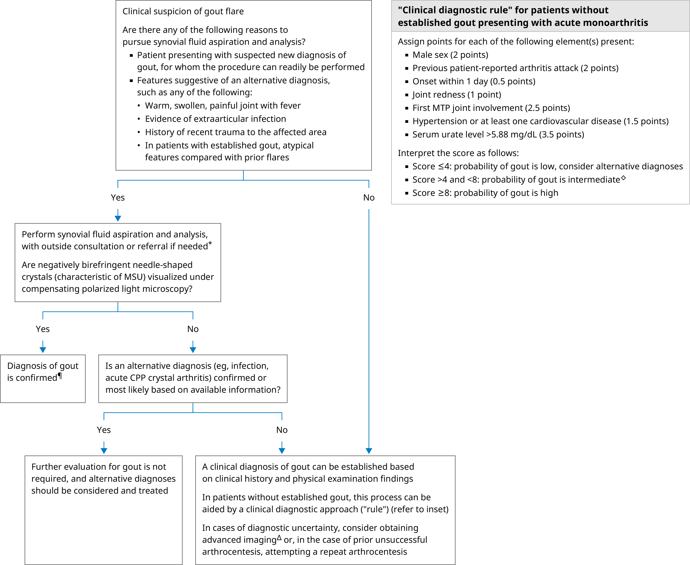

CPP: calcium pyrophosphate; DECT: dual-energy computed tomography; MSU: monosodium urate; MTP: metatarsophalangeal.
* Synovial fluid may be aspirated from an affected joint or bursa. Clinicians who are not skilled at joint aspiration should request the assistance of an experienced provider (eg, orthopedic surgeon, rheumatologist, or interventional radiologist). Synovial fluid analysis should include white cell count and differential, Gram stain and culture, and crystal search under compensating polarized light microscopy.
¶ Coexisting infection should be excluded based upon clinical assessment and synovial fluid analysis, including Gram stain and culture.
Δ Depending on local availability, we obtain either ultrasonography or DECT of the affected joints, especially when there is a history of multiple episodes of intermittent, acute inflammatory arthritis primarily involving 1 or a few specific joints.
◊ If patients score in the intermediate category, further investigation is required (eg, repeat arthrocentesis attempt, advanced imaging), as gout cannot be excluded or confirmed based upon an intermediate score alone.